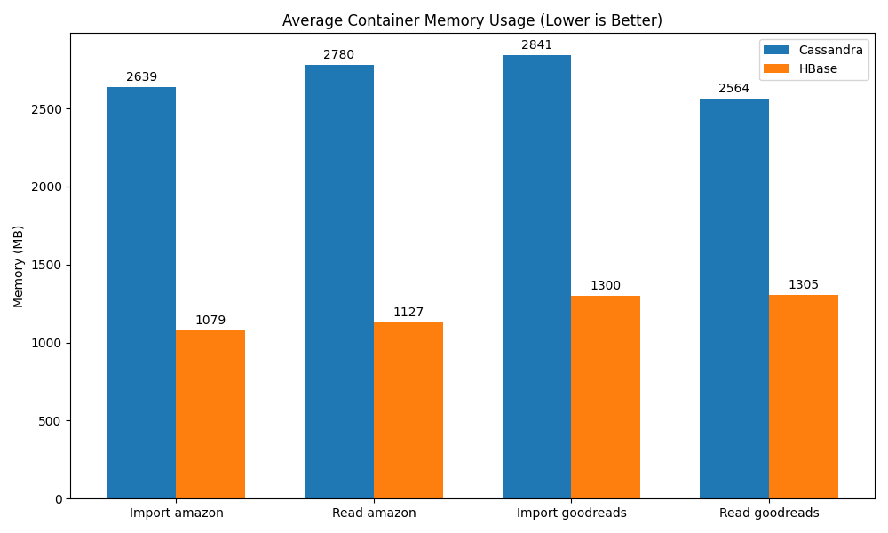
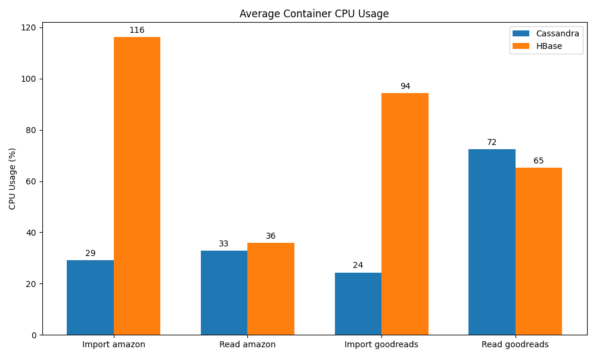

Cette étude évalue les performances et l'évolutivité des bases de données orientées colonnes ("Wide Column Stores"), spécifiquement Apache Cassandra et Apache HBase. Ces systèmes sont conçus pour gérer de très grands volumes de données distribuées avec une haute disponibilité et une scalabilité linéaire.
cassandra:latest (Version 4.x/5.x).dajobe/hbase (Version 2.x).La modélisation est cruciale dans les bases orientées colonnes, car les requêtes doivent être connues à l'avance.
Nous avons utilisé une modélisation optimisée pour les requêtes par utilisateur et par temps (Time Series) :
user_id (Distribution des données).timestamp (Tri des données sur le disque).reviews.CREATE TABLE reviews (
user_id text,
timestamp timestamp,
review_id text,
product_id text,
rating float,
summary text,
review_text text,
PRIMARY KEY (user_id, timestamp)
) WITH CLUSTERING ORDER BY (timestamp DESC);
Cette structure permet de récupérer efficacement l'historique d'un utilisateur (SELECT * FROM reviews WHERE user_id = ?).
HBase stocke les données sous forme de chaînes d'octets triées par clé de ligne (Row Key).
user_id + (Long.MAX_VALUE - timestamp) + review_id.
cf (stocke toutes les colonnes : product_id, rating, etc.).Cette clé composite permet des "Prefix Scans" performants pour récupérer tous les avis d'un utilisateur.
[!NOTE] Pourquoi l'export a été ignoré : L'opération "Export" (Full Table Scan) a été exclue de cette étude. Les bases orientées colonnes comme HBase et Cassandra sont conçues pour des accès aléatoires rapides, et non pour des exports complets séquentiels. Effectuer un export complet via un script client simple (comme ce benchmark) est un "anti-pattern" inefficace. Dans un environnement de production, cela nécessiterait des outils de traitement distribués comme Apache Spark pour paralléliser la lecture sur tous les nœuds.
| Base de Données | Dataset | Temps Total (s) | Observations |
|---|---|---|---|
| Cassandra | Amazon | 1924.8 s | Très lent (32 min). Probablement dû à la surcharge duBatchStatement mal tuné ou à la latence réseau Docker simple nœud. |
| Cassandra | Goodreads | 5410.3 s | Extrêmement lent (90 min). Limitation CPU/RAM évidente. |
| HBase | Amazon | 96.3 s | Excellent. L'écriture séquentielle via Thrift est très efficace ici. |
| HBase | Goodreads | 331.8 s | Maintient la performance à l'échelle (~5.5 min). |
Analyse :
BatchStatement pour de gros volumes est un anti-pattern connu si les partitions sont distribuées aléatoirement (le nœud coordinateur est surchargé). Une approche asynchrone (execute_async) sans batch aurait probablement été plus performante.| Base de Données | Dataset | Temps (s) | Latence Mois (ms) |
|---|---|---|---|
| Cassandra | Amazon | 2.94 s | ~2.9 ms |
| HBase | Amazon | 2.80 s | ~2.8 ms |
| Cassandra | Goodreads | 3.90 s | ~3.9 ms |
| HBase | Goodreads | 7.24 s | ~7.2 ms |
Analyse :
user_id permet un accès direct constant (O(1)), alors que HBase doit scanner les Blocks HFile même avec le bon RowKey, ce qui peut être légèrement plus coûteux à grande échelle sans optimisation (Bloom Filters).

CPU :
RAM :
happybase (Thrift) est une couche supplémentaire, mais elle s'est avérée étonnamment robuste pour l'écriture séquentielle.concurrent_writes, token_aware_routing) serait nécessaire pour égaler HBase.Dans le contexte de ce benchmark (Python, Docker, Time-Series), HBase est le gagnant global pour l'ingestion, tandis que Cassandra reste le roi de la lecture à faible latence à l'échelle.